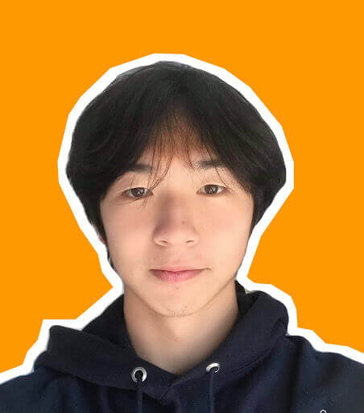
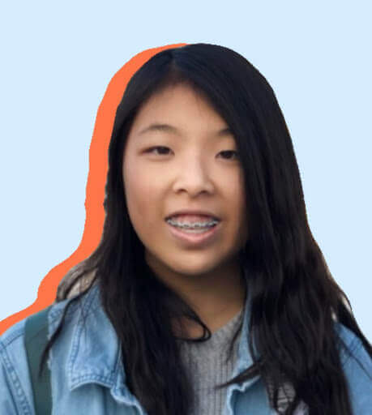

Executive Board

Ryan Liu Chief Executive Officer
Ryan is a rising junior at Northwood High School. Through InterSTEM, he hopes to spread his passion for STEM to less fortunate communities and create a platform where similarly-minded students can interact across the world. Ryan is most interested in mathematics and physics, and serves on the board of many school science clubs. Outside of STEM, he enjoys playing the piano, debating politics, and reading philosophy.

Minseo Kim Chief Operating Officer
Minseo (Min) is a rising junior at Beckman High School. Through InterSTEM, he aims to cultivate an interest in STEM among youths of varying backgrounds. He is the president of Orange County Coder and works to share his love of computer science and programming to the community. He also enjoys participating in different academic competitions in math and computer science. Outside of STEM, he is passionate about performing magic tricks and playing guitar.
Yongkuan Zhang Co-Chief Development Officer
Yongkuan is a rising senior at Northwood High School. He is passionate in fields such as biology and chemistry. Through InterSTEM, Yonguan aims to help students who have nascent interests in STEM progress further towards their personal goals through building an online consulting network that responds to both logistical and technical questions students may have. He likes listening to both classical music and light jazz, and he loves cats very much.
Aaron Yan Co-Chief Development Officer
Aaron is a junior attending Northwood High School dedicated to learning and teaching biochemistry. His passion towards these feelings has led him to take part in InterSTEM in the development of a tutoring program for the sciences. Aaron plays volleyball and the violin. He also very much likes listening to Christian music and early 2010’s pop songs and watching movies.

Alden Zeng Chief Financial Officer
Alden is an incoming junior at Northwood High School who enjoys studying chemistry and its application to advancing technology. Through InterSTEM, Alden hopes to broaden his horizon on the practices of STEM and provide a platform for the younger generation to contribute their voices to a rapidly evolving community. Outside of his interests in STEM, he is also a consistent runner and a saxophone player.
Alden Zeng Chief Financial Officer
Alden is an incoming junior at Northwood High School who enjoys studying chemistry and its application to advancing technology. Through InterSTEM, Alden hopes to broaden his horizon on the practices of STEM and provide a platform for the younger generation to contribute their voices to a rapidly evolving community. Outside of his interests in STEM, he is also a consistent runner and a saxophone player.

Bian Lee Chief Technology Officer
Bian is a rising junior at Northwood High School. He is most passionate about computer engineering and cryptography. Through InterSTEM, Bian aims to spark greater interest for the vast field of STEM and build an international community that will contribute to the rapidly progressing technology industry. He spends most of his time programming, solving cicada puzzles, as well as listening to and producing music.

Coco Li Co-Chief Marketing Officer
Coco is a rising junior at Beckman High School who is passionate in fields such as biology and chemistry. Through InterSTEM, she strives to promote a greater interest and provide a platform to help students’ deepen their understanding in STEM. She’s also involved in the Science Olympiad and hopes to grow her passion in other science areas. Outside of STEM, she loves watercolor and digital art.
Lizzie Duong Co-Chief Marketing Officer
Lizzie Duong is a junior at Northwood High School who embodies school spirit and community involvement. She is a part of Northwood ASB as technology officer and has directed several segments for Northwood Television’s award-winning broadcast. She is additionally a student-athlete juggling a rigorous academic course while playing school and club volleyball. Through InterSTEM, Lizzie hopes to share her love for STEM throughout the world.

Ashley Lee Editor in Chief
Ashley is a rising junior at Northwood High School who enjoys writing news articles and features. Through InterSTEM, Ashley hopes to provide students a platform where they can find their interests and understand the relevance of STEM-related topics to the changing world. Additionally, she enjoys reading classic literature, watching films, and going to the beach during sunsets.

Annabel Tiong Managing Editor
Annabel is a rising sophomore at Northwood High School eager to find opportunities to immerse herself in the community and further explore fields of interest such as biology or environmental science. By serving on the board of InterSTEM, she hopes to spread her passion for writing and politics by inspiring other students with similar passions. In her free time, she likes to admire correct usage of Oxford commas, Studio Ghibli films, and birds.
Annabel Tiong Managing Editor
Annabel is a rising sophomore at Northwood High School eager to find opportunities to immerse herself in the community and further explore fields of interest such as biology or environmental science. By serving on the board of InterSTEM, she hopes to spread her passion for writing and politics by inspiring other students with similar passions. In her free time, she likes to admire correct usage of Oxford commas, Studio Ghibli films, and birds.

Chris Song Chief Human Resources Officer
Chris is a rising sophomore at Northwood High School. He is most passionate in the fields of math and physics and is involved in multiple clubs at his school. Through InterSTEM, he hopes to utilize what he has learned and help others progress to personal goals through tutoring. Outside of STEM, he likes listening to classical music while reading academic journal articles.